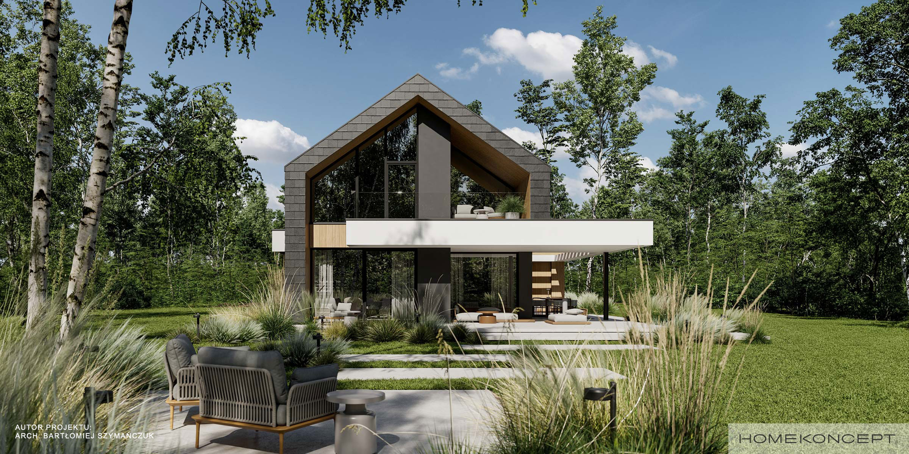
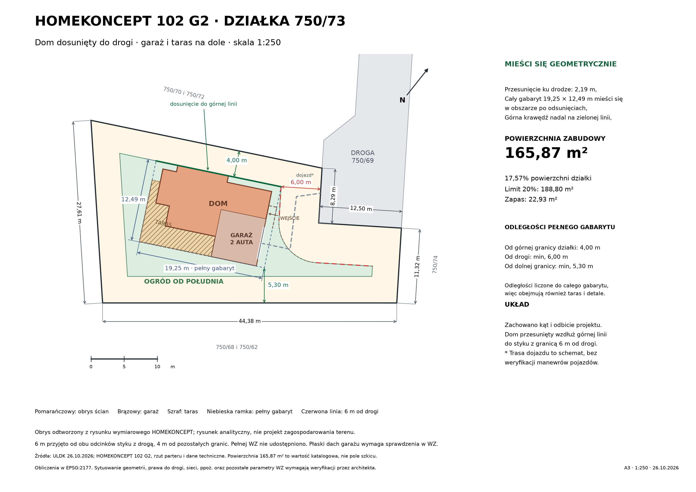
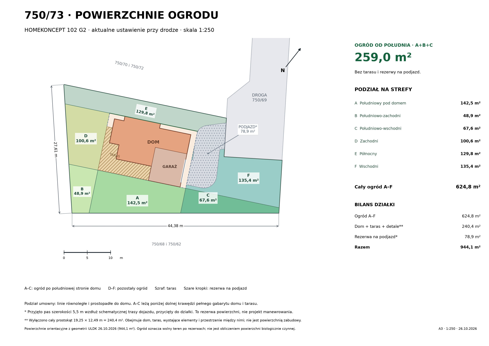

Wartość katalogowa. Limit według korekty WZ: 188,8 m².
CHWASZCZYNO · DZIAŁKA 750/73Dom przy drodze.
Dom przy drodze.
Ogród od południa.
Przykładowe zagospodarowanie z projektem HOMEKONCEPT 102 G2. Dom obrócony równolegle do górnej granicy obszaru zabudowy, dosunięty w górę i w stronę drogi. Garaż i taras pozostają na dole rzutu.
220508_5.0004.750/73Wariant koncepcyjnyJeden dom.
Jeden dom.
Sześć stref ogrodu.
To przykład układu na rzeczywistej geometrii działki. Odsunięcia i powierzchnie pokazują możliwości tego wariantu; pełna WZ i projekt zagospodarowania wymagają sprawdzenia przez architekta.
Zobacz rzut z góry ↓
Poza tarasem i rezerwą na podjazd.
Wolny teren po odjęciu przyjętych rezerw.
01
Dom dosunięty do drogi
Obrót o 11,69° w prawo względem osi rzutu pozwala ustawić górną krawędź gabarytu wzdłuż górnej linii dopuszczalnej zabudowy. Następnie dom przesunięto o 2,19 m ku drodze, zachowując tę orientację i układ garażu oraz tarasu.
4,00 mod górnej granicy działki
6,00 mod granicy drogi 750/69
5,30 mminimum od dolnej granicy

Powiększ rzut ↗02
Ogród w sześciu częściach
Południowy ogród to strefy A, B i C: łącznie 259,0 m². A leży bezpośrednio poniżej domu i tarasu, B rozszerza ogród na zachód, a C na wschód. Linie podziału są umowne, równoległe i prostopadłe do budynku.

Powiększ podział ogrodu ↗| Strefa | Położenie | Powierzchnia |
|---|---|---|
| A | Południowy pod domem | 142,5 m² |
| B | Południowo-zachodni | 48,9 m² |
| C | Południowo-wschodni | 67,6 m² |
| Ogród od południa · A+B+C | 259,0 m² | |
| D | Zachodni | 100,6 m² |
| E | Północny | 129,8 m² |
| F | Wschodni | 135,4 m² |
| Wszystkie strefy ogrodu · A–F | 624,8 m² | |
03
Co zajmuje powierzchnię działki?
| Przeznaczenie w przykładzie | Powierzchnia |
|---|---|
| Ogród A–F | 624,8 m² |
| Pełna strefa domu, tarasu i detali | 240,4 m² |
| Rezerwa na podjazd | 78,9 m² |
| Razem | 944,1 m² |
Założenie
Strefa domu to więcej niż zabudowa
240,4 m² to cały prostokąt 19,25 × 12,49 m. Wyłączono go z ogrodu jako rezerwę na dom, taras, detale i przestrzenie między nimi. Ta liczba nie zastępuje katalogowej powierzchni zabudowy 165,87 m².
Założenie
Podjazd jako rezerwa powierzchni
78,9 m² wynika z pasa szerokości 5,5 m wzdłuż schematycznej trasy, przyciętego do działki i pomniejszonego o strefę domu. To nie jest sprawdzenie torów jazdy, bramy ani promieni skrętu.
Ogród nie jest automatycznie powierzchnią biologicznie czynną. To wolny teren po wskazanych rezerwach. Dodatkowe chodniki, miejsca postojowe, instalacje i sposób zagospodarowania mogą zmniejszyć powierzchnię zieleni. Bilans PBC należy wykonać w projekcie.
04
Założenia i źródła
Deklaracja
WZ i odsunięcia
Przyjęto 6 m od obu odcinków granicy z drogą 750/69 oraz roboczo 4 m od pozostałych granic. Wskaźnik 20% pochodzi z korekty użytkownika. Pełnej decyzji WZ z mapą nie udostępniono; jej linie, zakres i pozostałe warunki mogą zmienić wynik.
Do sprawdzenia
Przed adaptacją projektu
Potrzebne jest sprawdzenie płaskiego dachu garażu w WZ, sieci i służebności, odległości pożarowych, dostępu i manewrowania, gruntu, wody oraz odwodnienia. Rzut nie potwierdza dopuszczalności budowy ani suchego ogrodu.
Wymiary, rzut parteru i wizualizacja katalogowa. Autor: arch. Bartłomiej Szymańczuk, HOMEKONCEPT. Odczyt 26.10.2026. Zachowano oznaczenia autora na obrazie.
Wybrany przez użytkownika projekt; katalogowa powierzchnia zabudowy 165,87 m². Nie mylić z powierzchnią użytkową domu.
Odczyt 26.10.2026, obliczenia w EPSG:2177. Powierzchnia geometryczna 944,108 m²; oferta podaje 944 m². Wymiary mapowe nie zastępują pomiaru geodezyjnego.
Obrys ścian jest poglądowym odtworzeniem rysunku autora; dopasowanie sprawdzono dla całego gabarytu. Sekcje nie nakładają się, a bilans obejmuje całą geometrię działki. Starsze mapy, teren i koszty w głównej analizie zachowują swoje daty.